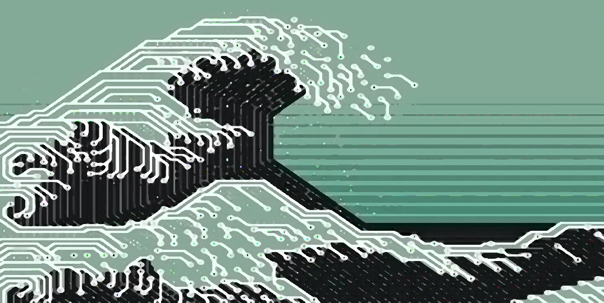

ABOUT.ME
My name is Derek Xu. I am a second year Electrical
Engineering major at the University of California, Los
Angeles. I am interested in programming, soldering, and
designing new technologies. This website contains a
compilation of software and hardware projects I have
worked on. Hope you have a nice time here!
